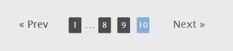
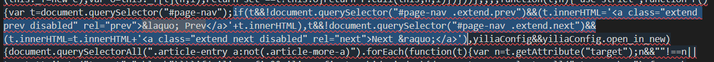
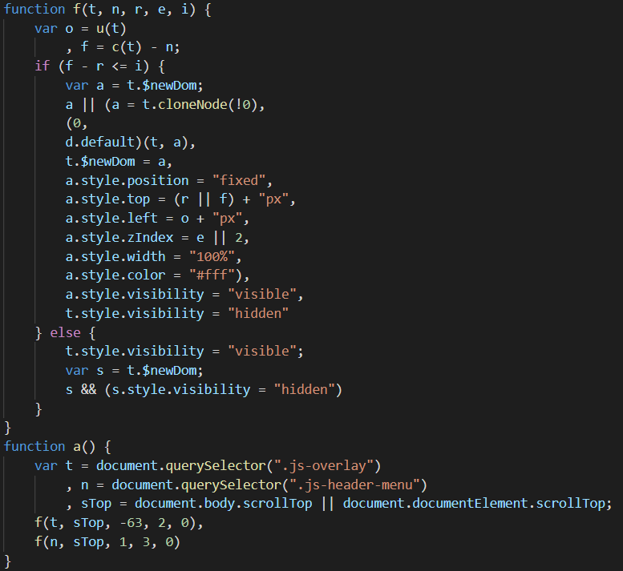
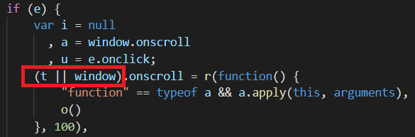

这个主题本身挺好的，可是也有一些问题。
以下内容为自己发现的问题及解决办法(作者很长时间不更新主题了，所以有问题就要自己动手解决)
说明：本篇文章有目录，问题分析可以不看，直接看解决方法
1.主题首页，第一页的底部，出现了Prev选项
第一页和最后一页出现了上一页和下一页本不应该出现的标签，其实是作者为了美化博客主题而特意添加的
这里提供删除方法

我的想法是直接把这个选项删除
解决方法
- 主题文件进入
themes\yilia\layout\_partial,找到script.ejs文件，打开用编译器寻找if(t&&!document.querySelector("#page-nav .extend.prev")&&(t.innerHTML='<a class="extend prev disabled" rel="prev">« Prev</a>'+t.innerHTML),t&&!document.querySelector("#page-nav .extend.next")&&(t.innerHTML=t.innerHTML+'<a class="extend next disabled" rel="next">Next »</a>')

- 把这段代码所对应的函数注释，或者把
« Prev和Next »删除
- 注释后效果
2.语言配置问题
查了各种资料，hexo博客修改语言，做了很多尝试，都不好使。既然是国人写的，为什么默认上一页和下一页是英文，反正我是看不惯。网上修改主题语言可能对别的主题有效，但是对yilia主题一点效果也没有。（yilia主题中上一页和下一页的英文是写死的，只能手动更改）
解决方法（将上一页和下一页改为中文）
- 在主题文件中用编译器查找
« Prev和Next »，然后将所有的Prev修改为上一页，Next修改为下一页（只需要更改.ejs文件中的即可）
注：«»对应的字符为«»
补充说明
yilia主题网页语言配置有一个问题，谷歌浏览器每次刷新页面都会提示是否翻译为中文，其实是lang的语言和本地系统语言不一致造成的。
网页源代码中html没有添加lang属性，这里提供一个解决办法
解决办法
- 定位文件
themes\yilia\layout\_partial\head.ejs，在里面找到html标签 - 将
<html>修改为<html lang="<%= config.language %>">，导入站点配置文件引入的language - 问题解决，刷新页面不再提示翻译为中文
3.随笔a标签点击后样式不改变（移动端）
- 从github网站cloning最新的yilia主题，配置成功后，应该还记得两个a标签：主页、随笔
- 主页还好，你点击后，进入相应的页面，主页a标签的样式变了，但是当你点随笔的时候，进入相应的页面后，随笔a标签样式没有变。这个问题困惑了我很久，最开始以为，只有主页的样式能变，但是我错了，作者的那个博客，里面有相册这个标签，它的样式是可以变的，还有所有文章(有的起名为归档
所有文章: /archives/)标签，样式也可以变，唯独自己的随笔a标签被点击时，样式没有任何变化。 - 感觉这个是主题作者知道的问题，但是还没有修复，可能不会修复了
- 观察了一下，当你点完标签后，那些标签都被加了一个class属性，值为：active，唯独你随笔标签，它就不加那个class属性，添加class属性的函数找到了一个，不知道是不是，感觉没有什么问题，文件目录
themes\yilia\source-src\js\mobile.js，重点是修改不起作用
解决办法（自行研究）- 既然tag标签样式不能变，那就都不让变，像pc端那样，加一个手指单击切换样式，不改变样式，在themes\yilia\source\main.0cf68a.css中查找.header-menu li a.active，把a.active改为a:active
皇天不负有心人，经过我的多番探索，找到了解决方法
问题分析
- 1.首先，这个是点击a标签后，在a标签上添加了一个class属性：active,然后通过css改变点击后a标签的样式。（添加样式的方法只能是js语句）
- 2.定位文件 在主题文件中用编译器查找
.js-header-menu li a，在文件目录themes\yilia\layout\_partial找到script.ejs文件，你会查询到以下代码(我的代码经过规范化整理，并非在一行显示)
1 | function i(t, n) { |
- 没错，就是这两个函数，通过
return t.replace(r, "") === n.replace(r, "")来判断，如果返回值为真，即添加class样式。 - 问题就出现在了
n.replace(r, "")，用alert语句，当你点随笔时，界面会出现tags%E9%9A%8F%E7%AC%94,没错，就是中文乱码问题，添加alert语句alert(t.replace(r, ""))，显示tags随笔 - 从这你应该看出,当你点随笔时,语句
return t.replace(r, "") === n.replace(r, "")不可能为真，因此也就不会执行(0,h.default)(o, "active")代码，即不会添加active属性。（归档标签为archives,没有中文，所以能添加样式）解决方法
n = window.location.pathname获取url路径，有中文时出现乱码，解决中文乱码问题。中文乱码原因：url中文加密- 运用url解码函数
decodeURI(),将加密的中文翻译回中文 - 修改i函数传参
i(n, o.getAttribute("href")),把n改为decodeURI(n) - 注：
o.getAttribute("href")获取到的url可能也会出现加密，取决于博客所用的hexo版本，如果加密，添加相应的解码函数即可
1 | function i(t, n) { |
- 运用alert语句
alert(n.replace(r, ""))，界面显示tags随笔，到此问题解决 - 在
themes\yilia\source\main.0cf68a.css中，.header-menu li a:active，把a:active改回a,active,或者添加语句,.header-menu li a:active
1 | .header-menu li a:active,.header-menu li a.active { |
- 即保留
.header-menu li a:active，解释一下为什么要保留，这个是点击事件样式，加上的话效果显示更好（可以让你更好的确认你是否点击了这个标签）
4.css和js文件中的代码看不懂
css和js代码，在编译器中打开，我也真是无语，代码全部写在一行里，放眼望去，根本看不懂，好在我还是学过前端的人，但是，我看着都很费劲。
这是对css和js代码进行压缩，优点是：节省空间，提高网页加载速度
解决方法
有压缩就会有相应的解压缩，上百度上搜索相应的解压工具（或格式化工具），一般都是网页，将要解压的代码粘到里面，点击格式化或解压缩即可
- 定位文件
themes\yilia\layout\_partial\script.ejs,这个是ejs文件，ejs是一个JavaScript模板库，用来从JSON数据中生成HTML字符串。里面第一个script标签中有很多js代码，而且写在一行。比较了一下，这里面的js语句与themes\yilia\source\mobile.992cbe.js中的语句几乎是一模一样（特地比较了一下，就是把个别参数换了个名字，有的代码简写，本质上根本没变化）。这里我就不太理解了,将代码写在网页中，提高了加载速度，写在网页中的js比script.ejs写了那么多js代码，为什么不把mobile.992cbe.js导入代替script标签中的js代码？这个就同为什么不把css样式直接写在style标签中，而是要link导入一个道理。themes\yilia\source\mobile.992cbe.js中的小，而且严谨 - 修改文件
script.ejs,将mobile.992cbe.js导入代替script标签中的js代码，并将第一个script标签和其中的js代码删除（script是双标签）
1 | <script src="<%=config.root%>./mobile.992cbe.js"></script> |
<script src="<%=config.root%>./mobile.992cbe.js"></script>语句用于引入mobile.992cbe.js- 之前在
script.ejs修改的代码在mobile.992cbe.js中再修改一遍，或者，将script.ejs中第一个script标签中的js代码去替换mobile.992cbe.js中的代码，在最后一句加上一个;（其它js文件中代码结尾都有;）。
5.手机浏览器，网页中的个别样式无法实现，当然，电脑端的也有
先说一下电脑端的问题，个人觉得不需要解决，看以下两张图片
Microsoft Edge浏览器
Google Chrome浏览器
很明显的tag标签样式不兼容，一个是方框，一个是按钮，暂时没找到解决方法，其实没什么影响（这是个别标签样式不兼容导致）
手机端的兼容问题比较严重
在我的手机自带浏览器中，博客页面往下滑，你会看到一个效果
当顶部主页和随笔标签要滑出屏外时，那两个标签会自动在顶端悬停，看图片（主题作者博客测试 网址：http://litten.me/）
左面是是手机自带浏览器显示的效果，这个动画设计的很好，代码我不会。右面是有兼容问题的浏览器(Microsoft Edge测试，Google Chrome显示效果相同)
右面的没有左面的效果，那两个标签直接就滑上去了，但是有一个标签下来了，最左边那个多功能标签，没有背景色，白色的字体，不仔细看都看不出来
这个问题起初我以为是我把主题某个配置文件改了导致的，但是作者博客在Chrome浏览器中测试的结果跟我一样，看来不是我以为的问题，而是这个博客的通病。某个动画效果在这几个浏览器中不兼容。整了将近一下午，也没找到解决办法，主要是前端的知识学的不够，现在学java了，前端的知识忘得更多了。
解决方法（自己研究）
- 既然有一个标签能下来，有时可能看不见，那就让它可见，添加一个背景色，与上面的颜色相同（因为这个标签是从上面移动下来的，如果颜色不一样，看着很不协调），将背景色改为透明
- 代码修改:
themes\yilia\source\main.0cf68a.css中查找.btnctn，在里面添加一行代码background: rgba(77, 77, 77, 0.5)前提是之前没改过上面的背景颜色，如果改过，前三个值改为自己的rgb颜色，如果是十六进制颜色，自行转换，后面的0.5为透明色
- 效果如下（图片左上角）
- 按钮加了一个背景色，背景色透明，让人能够清晰地看到那个按钮（个人觉得不是很好看），在动画不生效的手机浏览器中这样显示，生效的浏览器会显示生效的动画页面
皇天不负有心人，经过我的多番探索，找到了解决方法
问题分析
- 既然是代码兼容问题，就要先找到执行此动画的代码，也是js代码
- 因为是a标签悬停，所以要找到a标签样式属性。在浏览器控制台可以看到
class="header-menu js-header-menu",开发者对代码的规范性还是有的，用到js的样式，都有js标注。 - 定位文件。在主题中，用编译器查找
js-header-menu，如果你照着我之前将mobile.992cbe.js导入代替script.ejs中第一个script标签中的js代码，那么会在mobile.992cbe.js中找到如下代码,如果没有照做，代码应该在script.ejs文件中
- 这个函数与上面的函数关联
- 问题就出现在了这几个函数上了。通过使用alert语句，查询出了端倪。
- 这个函数中
1 | function a() { |
document.body.scrollTop的值始终为0，导致了上面对应的函数
1 | function f(t, n, r, e, i) { |
if (f - r <= i)的判定始终为false，从而执行else语句，导致没有了那个动画效果- 相关代码（可自行分析）
1 | function u(t) { |
解决方法
document.body.scrollTop的值始终为0，那就查询一下这段代码是什么意思
获取当前页面滚动条纵坐标的位置：document.body.scrollTop与document.documentElement.scrollTop
获取当前页面滚动条横坐标的位置：document.body.scrollLeft与document.documentElement.scrollLeft
1.各浏览器下 scrollTop的差异:
IE6/7/8：
可以使用 document.documentElement.scrollTop；
IE9及以上：
可以使用window.pageYOffset或者document.documentElement.scrollTop
Safari:
safari： window.pageYOffset 与document.body.scrollTop都可以；
Firefox:
火狐等等相对标准些的浏览器就省心多了，直接用window.pageYOffset 或者 document.documentElement.scrollTop ；
Chrome：
谷歌浏览器只认识document.body.scrollTop;
注：标准浏览器是只认识documentElement.scrollTop的，但chrome虽然我感觉比firefox还标准，但却不认识这个，在有文档声明时，chrome也只认识document.body.scrollTop.
由于在不同情况下，document.body.scrollTop与document.documentElement.scrollTop都有可能取不到值，那到底网页的scrollTop值怎么得到呢？难道又要用JavaScript进行判断？
其实不必。因为document.body.scrollTop与document.documentElement.scrollTop两者有个特点，就是同时只会有一个值生效。比如document.body.scrollTop能取到值的时候，document.documentElement.scrollTop就会始终为0；反之亦然。所以，如果要得到网页的真正的scrollTop值，如果不考虑safari，可以这样：
var sTop=document.body.scrollTop+document.documentElement.scrollTop;
这两个值总会有一个恒为0，所以不用担心会对真正的scrollTop造成影响。一点小技巧，但很实用。
- 这个介绍中，明确说了
document.body.scrollTop在不同浏览器上的不同情况，的确有兼容问题。而且文章中说谷歌浏览器只认识document.body.scrollTop，但是我就是在谷歌浏览器上测试效果的，很显然谷歌是不认document.body.scrollTop的，因为值始终为0。文章中有提到因为document.body.scrollTop与document.documentElement.scrollTop两者有个特点，就是同时只会有一个值生效。比如document.body.scrollTop能取到值的时候，document.documentElement.scrollTop就会始终为0；反之亦然。所以运用文章中的方法var sTop=document.body.scrollTop+document.documentElement.scrollTop;测试，方法的确有效，alert后，那个值不为0了。当然，可能会有浏览器document.body.scrollTop和document.documentElement.scrollTop都识别的情况，因此，提供一个||语句判断，即var sTop=document.body.scrollTop||document.documentElement.scrollTop;。 - 这里介绍一个属性
window.scrollY，用这个也可以 - 代码修改如下：
1 | function a() { |
- 声明一个sTop变量，
var sTop = document.body.scrollTop || document.documentElement.scrollTop;，将这个变量传到f函数中，在浏览器上测试出现了效果。（js效果实现）

- 补充：个人觉得作者开发这个效果其实是省去了回到顶端按钮的实现，因为那几个悬停在顶部的a标签就是回到顶部后所拥有的标签，而且效果很好，看着也很舒服
- 回到上面解决方法（自己研究），将按钮添加背景色属性删除（效果实现后，这段代码很显然是用不到了）
浏览器主题主页面右侧出现了双滚动条
个别浏览器可能会出现出现双滚动条解决办法
在css文件中查找pc端样式将1
2
3
4
5#container,body,html {
height: 100%;
overflow-x: hidden;
overflow-y: auto
}overflow-y: auto删除，问题解决6.yilia主题分享的一些问题（移动端）
接着上面的效果实现，发现了一个问题。手机端进入到某个文章，上面的那几个a标签有时不能点击。电脑浏览器控制台发现，在那几个a标签上隐藏了一个微信分享的div标签（里面有微信分享二维码），虽然看不到，但是它却在那几个a标签的上面。看了一下开发者的博客，标签没有在那个地方隐藏，而是真正的隐藏。这个让我很困惑。
折腾了几次，找到了问题。如果微信分享二维码存在（即图片路径有效），那么微信分享的div标签即真正隐藏，如果无效，那它就会在顶部的那几个a标签上面隐藏（z-index的值大于那几个a标签的值），而使你不能点击那几个a标签解决方法
定位文件themes\yilia\source\main.0cf68a.css，在里面查找.page-modal，添加css：display: none;
细心的你也许会发现，在开发者对css打包前，themes\yilia\source-src\css\share.scss文件中.page-modal有display: none;这个属性，但是被开发者注释了display: none;这个属性，决定着二维码出现时的动画，不添加这个属性，二维码会有一个从上到下出现的动画效果不添加
定位文件display: none;属性的完美解决办法：themes\yilia\source\main.0cf68a.css，在里面查找.page-modal，删除css：z-index: 1001;
在里面查找.page-modal.ready或.page-modal.in，添加css：z-index: 1001;
在yilia主题常见问题及解决办法下文章中解决了分享二维码不显示的问题7.yilia主题移动端页面没有返回顶部按钮
说到这个返回顶部按钮，其实开发者最初开发这款主题时就没有返回顶部按钮，返回顶部按钮是开发者后期加上去的。但是返回顶部按钮只出现在pc端，移动端并没有出现。自己折腾了一下，改了几行代码，解决了移动端没有返回顶部按钮的问题。
问题分析
- pc端页面按钮出现，移动端按钮不出现。pc浏览器控制台发现，返回顶部按钮是在aside标签中实现的。在pc端页面，aside标签样式display为block，但是在移动端页面，aside标签display值为none。none值为隐藏（这里说明一下，开发者刻意在移动端样式中加了这段代码，这段代码的加入，即使之后的那个o函数被调用，返回顶部的按钮也不会出现）。
1 | .wrap-side-operation { |
- 在aside标签中的div标签看到了
js-jump-container，依然是调用了script。用编译器打开主题文件，在里面查找js-jump-container。在themes\yilia\source\main.0cf68a.js中找到相应函数
1 | 189: function(e, t) { |
- 问题就出现在o函数调用上
- 移动端o函数始终不被调用，起初以为是匿名函数在移动端不会被调用，强制调用后，问题没解决
- 经查询，问题出现在了这上面
 (t || window).onscroll,(t || window)出了问题，这段代码只在pc端生效，到移动端就不生效了。尝试把||换成|,问题没解决，反而在控制台报错了。- 简单说一下，这段代码和后面的
o()怎么联系起来的我是没看明白，感觉(t || window).onscroll是一个判断，onscroll是在元素轴滚动时触发的。 - 测试结果显示：
(t || window).onscroll,(t || window)控制后面o()函数的调用（我也不太理解这段代码为什么会控制o()的调用，但事实就是如此），t.onscroll适用于pc端，window.onscroll适用于移动端。 alert(t)提示：[object HTMLDivElement]，alert(window)提示：[object Window]，pc端与移动端均是此提示，由此可见(t || window)判断出了问题，它会一直执行t,而不是window。- o()作用是将标签
<div class="jump-container" id="js-jump-container" style="display: none;"></div>的style="display: none;"改为style="display: block;"，从而显示出返回顶部的i标签，点击返回顶部的i标签触发下面返回顶部函数的实现。但是，在移动端样式中，aside标签是被加了display: none的，这个div标签被嵌套在aside标签里面。所以，如果想在移动端添加返回顶部标签，display: none不能留。 - 到此，问题查明
解决方法
- 定位文件
themes\yilia\source\main.0cf68a.css,在里面查找.wrap-side-operation，找到@media screen and (max-width: 800px)下的.wrap-side-operation，因为要在移动端页面添加返回顶部按钮，所以要在移动端的样式下修改，@media screen and (max-width: 800px)即为移动端不同于pc端的样式，在移动端页面时，@media screen and (max-width: 800px)样式的权重是高于非@media screen and (max-width: 800px)下样式的权重的。 - 修改内容如下：
1 | .wrap-side-operation { |
- 将
display: none去掉添加right: 0,right控制按钮距离右面的距离，pc端样式right为40px,根据需要更改。以下图片为pc端right: 40px与移动端rigth: 0效果
- 添加
.jump-container:hover .icon-back {background: #ccc}和.jump-container:active .icon-back {background: rgba(36,193,246,.9)}的原因是修改点击返回顶部按钮样式。pc端样式代码：
1 | .jump-container:hover .icon-back { |
- 如果不单独添加那两段代码，移动端返回顶部按钮被点击时，按钮会变为蓝色，且不会还原(刷新页面后会还原)，pc端那个变蓝色是鼠标悬停样式，到移动端会出问题，也有可能会不变色。利用权重的关系，在移动端样式添加这两段代码，只在移动端生效。
:active为鼠标单击时样式，:hover为鼠标悬停时样式。个人感觉:active更适用于移动端。 themes\yilia\source\main.0cf68a.js文件中修改(t || window).onscroll。将(t || window).onscroll拆开，写成两个
1 | t.onscroll = r(function() { |
简写为
1 | t.onscroll = r(function() { |
- 修改后的函数为
1 | 189: function(e, t) { |
- 到此，移动端返回顶部按钮添加成功（主题配置文件依然控制返回顶部按钮的实现）
通过几次修改主题功能做出以下总结：
1.开发者很用心，用到js的地方均有js标注，为查找函数省去了一定的麻烦
2.开发者也考虑到了部分标签在不同浏览器不兼容的情况，开发者运用的是||语句，这一点启发了我
3.ejs文件是导入html代码用的
主题的开发者好久没有更新主题了，有什么问题就要自己动手解决
以下内容为一个补充
想必大家有用hexo引用本地图片的吧
遇到如下情况解决方法
修改本地引用的图片，名字没有变，但是图片改了，浏览器预览后发现图片没有改，这时需要在git中输入
hexo clean
之后再运行hexo g -d
完事后，图片就换了